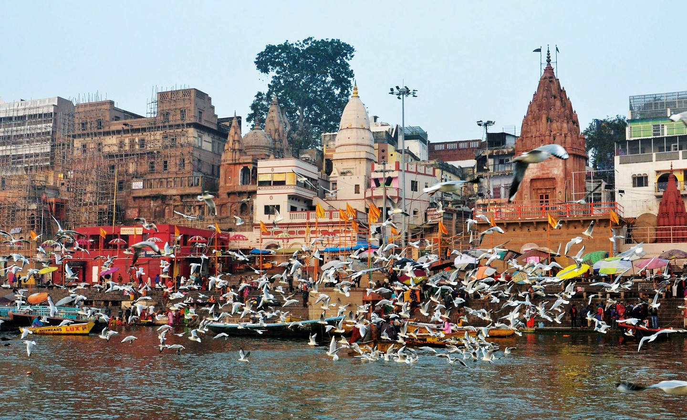

Hindu SACRED SITE VIP Kashi Vishwanath & Private Ghat Bajra
✓ CONCIERGE VERIFIED
Varanasi
One of the oldest continuously inhabited sacred cities in the world, reverently lining the sacred River Ganges. A profound center of prayer, life rituals, and moksha.
OPTIMAL SEASON
🗓️ Oct – Mar (Dev Deepawali & Mahashivratri)
JOURNEY PACING
⏱️ 4–6 Days Private Tour
♦ Ganga Aarti at Dashashwamedh Ghat
♦ Kashi Vishwanath Corridor VIP Darshan
♦ Dawn boat pilgrimage with Vedic chants